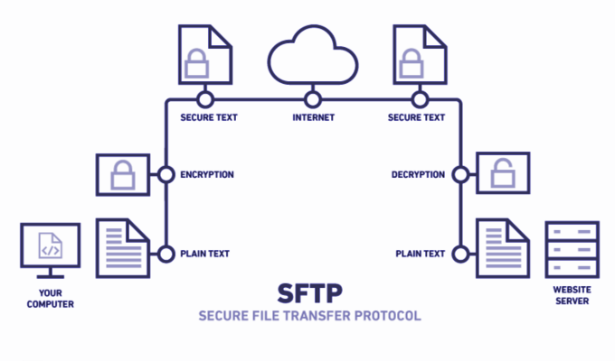

4. Protocolo de transferencia de ficheros seguro
Cuando se redactó el protocolo FTP dentro de la RFC 959 la seguridad no era un tema crítico. Con la evolución de las redes y la transferencia masiva de datos dentro de las redes públicas, ha cambiado mucho respecto a las ideas originales en los años 70 y 80. Esta evolución hace que enviar datos sin encriptar sea muy arriesgado y que protocolos antiguos tengan que evolucionar para garantizar que la remisión de datos sea segura.
Con la evolución de las redes, el protocolo FTP hizo que se originarán nuevas revisiones para paliar las deficiencias de seguridad y en 1997 se redactó la actualización del protocolo FTP que da como resultado el SFTP.
Los autores de la RFC listaron en 1999 las diferentes vulnerabilidades FTP:
- Ataques Spoofing
- Ataques de fuerza bruta
- Ataques rebote (bounce attacks)
- Captura de paquetes (sniffing)
- Robo de puertos (puerto stealing)
- Claves de usuario y datos no cifrados
Las soluciones a estas vulnerabilidades son:
- FTPS (cifrado SSL/TLS entre Cliente y Servidor)
- SFTP (SSH File Transfer Protocol)
FTPS (cifrado SSL/TLS entre Cliente y Servidor)
FTPS (File Transfer Protocol Secure) es un protocolo de transferencia de archivos que agrega una capa de seguridad a FTP (File Transfer Protocol) mediante el uso de SSL/TLS (Secure Sockets Layer/Transport Layer Security) para cifrar las comunicaciones entre el cliente y el servidor. El objetivo principal de FTPS es proporcionar una transferencia de archivos segura y proteger la confidencialidad y la integridad de los datos durante la transferencia.
Si hacemos una analogía con la transferencia de páginas web podemos decir que FTPS es a FTP lo que HTTPS es a HTTP. Dicho de otra forma, si recordamos del tema de servidores web, para la trasferencia de páginas web en modo seguro se desarrolló HTTPS. Para transferir páginas por https, el servidor debe tener un certificado instalado y, cuando el cliente pide una página por https, el servidor le envía un certificado que contiene su clave pública. El cliente genera una clave simétrica, que cifra con la pública del servidor y se la envía. El servidor la desencripta con su clave privada y a partir de ahí intercambian la información de forma encriptada usando la clave aleatoria que ambos conocen.

Pues en FTPS es similar. El servidor debe tener un par de claves pública privada y el establecimiento del canal es similar al visto anteriormente. Por tanto, para poder usar FTPS, vemos claramente que el servidor deberá tener el par de claves y habrá que configurarlo para que soporte este tipo de conexión.
Hay dos modos de trabajo con FTPS :
-
FTPS Explícito (FTPES): En este modo, la seguridad SSL/TLS se inicia después de que el cliente se conecta al servidor y emite un comando específico (por ejemplo, AUTH TLS o AUTH SSL) para solicitar una conexión segura. Por tanto la primera conexión del cliente al servidor es por el puerto habitual de comandos de FTP, el 21.
-
FTPS Implícito (FTPIS): En este modo, la seguridad SSL/TLS se establece automáticamente cuando el cliente se conecta al servidor en un puerto específico (generalmente el puerto 990 para FTPS implícito).
Atención
La mayoría de las conexiones FTPS utilizan el "Modo Pasivo" por seguridad. Así que al configurar un servidor FTPS deberás configurar los puertos que se usarán en el modo pasivo y abrir esos puertos en el firewall. Al realizar una conexión a un servidor por FTPS selecciona "Modo pasivo"
SFTP (SSH File Transfer Protocol)
Hay otro tipo de servicio seguro con FTP denominado SFTP.
SFTP suele ser confundido con el servicio FTPS y viceversa, y realmente no tienen nada que ver mutuamente. Excepto por la seguridad en la remisión de ficheros, el procedimiento interno es diferente. SFTP está basado en SSH (secure shell), protocolo conocido para proveer seguridad a los terminales remotos.
No hace uso de canales de órdenes y de datos. Los dos canales que usamos en SFTP se envían en paquetes con formato dentro de un mismo canal, es decir, el canal de datos y de órdenes es único. Por lo general, SFTP utiliza el puerto 22, que es el puerto predeterminado para las conexiones SSH. Sin embargo, este puerto puede configurarse de manera diferente si es necesario.
Todos los datos enviados y recibidos son encriptados mediante un algoritmo de encriptación previamente acordado. Las sesiones están protegidas mediante claves públicas y privadas, que ofrecen un sistema de autenticación conocido como autenticación de clave pública que se puede usar como alternativa o unión de los sistemas de autenticación tradicionales de nombres de usuario y contraseñas.
Dicho de otro modo, al establecer una conexión por SFTP, primero se establecerá un canal SSH entre el cliente y el servidor, igual que en una conexión de consola, y una vez establecida todo en intercambio de mensajes de control y datos entre el cliente y el servidor ftp se realiza dentro de ese canal encriptado, normalmente el puerto 22.

Por tanto, deberemos haber configurado en el servidor SSH con la clave pública del usuario que se va a conectar con la clave privada, exactamente igual que hicimos en la práctica "P0.3. Conceder acceso a un segundo administrador". Fíjate que no hablamos del servidor ftp, sino del servidor ssh. En este caso el servidor ftp no necesita de ninguna configuración adicional; no necesita generar claves pública y privadas propias, ya que la encriptación se realiza usando las claves pública/privada de cada usuario por parte del servidor ssh.